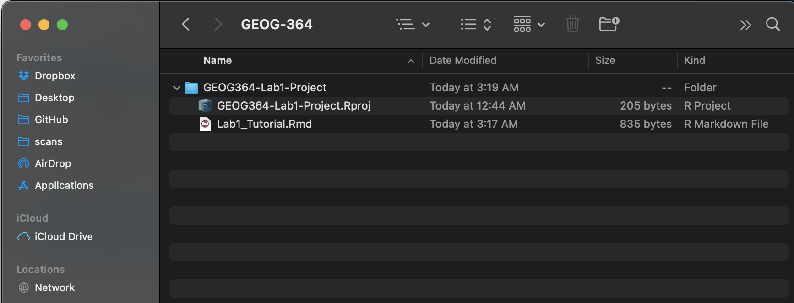

Tutorial 4: Markdown
GEOG-364 - Spatial Analysis
GEOG-364 - Spatial Analysis
Tutorial 4: Markdown
This tutorial is all about getting used to the basic commands you can run in R.
Tutorial 4A: What is markdown
Read more here: https://rmarkdown.rstudio.com
As I said at the start, the console is like a phone call to the computer, you’re talking but you’re not keeping records of what you say (you can always press the up key to see previous commands but that’s about it). Whengit What we need instead is a way to save the commands for future use - we can do this using scripts. There are several types of document, or script that you can create and save in R-Studio.
A basic script (the filetype is .r). This is simply just a blank notepad where you can save code commands. When you “run” the commands in the script, R simply copy/pastes the commands over to the console.
An R-Notebook or R-Markdown document (the filetype is .Rmd). These are much more interesting - and are how I wrote this lab book. This is what we will be using in our labs.
In a markdown document: imagine a normal Microsoft Word document, but halfway through you can press a button and a mini R console appears. You type your code inside the mini console, it runs and puts the plots/output just below - then you leave the console and continue writing about the results. Essentially you never have to take another screenshot of results and move it to your output…
Rmd files are also flexible. You can turn them into reports, websites, blogs, presentations or applications with a few short commands.
In this course we are going to focus on the R-Markdown format and you are going to submit your labs as websites/html files along with your code.
Tutorial 4B: Creating a markdown document
Time to make your own. Go to the File menu on the top left, then click New File - R-Markdown. If this is your first time ever, it might ask to download some packages to be able to do this. Say yes.
Eventually a window will open up:

It will ask you to name and save your file. Give it a relevant name. A new file should appear on your screen. At the top of that window (by the knit button, there is a save button. Save it as something relevant INSIDE YOUR PROJECT FOLDER!

The new file on your screen is your first markdown script. Essentially, we have some space for text, some space for code, and a space at the top of the file where we can add information about themes/styles etc.
Tutorial 4C: Markdown Basics
Your file contains some friendly text to explain what is going on, which I have annotated here. Read the file and see what it says.

Tutorial 4D: Knitting
The file on your screen isn’t the finished article. To see how it will look as a final version, we need to “knit” it.
Go to the top of the .Rmd file, find the knit button.
Press it (you might have to first save your script if you haven’t
already, then press it again)
You should see that the Markdown tab “builds” your document and you get an output as a website. The html should also be saved into your project folder.
For example, from my other class, here is a file with markdown and knitted output.

Tutorial 4E: Editing YAML Code
Your YAML code is the code at the top of your file in between the — lines. (see @ref(fig:tut4fig4))). Let’s zoom in

Your YAML code controls how your final output looks and which type of output it becomes. For example, this could be a website (as for ours), a pdf, a presentation or app.. The basic version is very simple with a title, an author, a self entered date and that we just want a website.
Let’s add in more options.
YAML code is annnoying to edit, because here, spaces really do matter. Everything has to be perfect or it won’t knit.
Select everything in my code chunk here and replace your YAML with this (remember the — on line 1 and at the end).
---
title: "GEOG-364 - Lab 2"
author: "hlg5155"
date: "`r Sys.Date()`"
output:
html_document:
toc: true
toc_float: yes
number_sections: yes
theme: lumen
df_print: paged
---Replace the author ID with your user name, change the tite if appropriate, then click knit and see if it works.
The elements we just added are:
- The title
- The author (note,use your ID not your name)
- Automatically created today’s date
- A floating table of contents
- Numbered sections (this won’t appear until you start typing section headings)
- The document is now in the lumen theme.
Troubleshooting
Note, if you copy/paste this and it doesn’t work, sometimes the quote marks copy weirdly from the internet - try deleting and retyping the quotes.
If it still doesn’t work.. this might be because a space is missing (especially if you typed it out).
- Editing YAML code can be a pain. It is very case and space
sensitive.
For example, the spaces at the start of some lines are important and are created using the TAB KEY, not the space bar. There is one TAB key before html_notebook (which is now on a new line). There are two TAB KEYS before toc, toc_float, number_sections and theme.
- Editing YAML code can be a pain. It is very case and space
sensitive.
Don’t continue until you can make and view your html when you press knit. If it doesn’t work, ask for help before moving on
Changing the theme
You don’t need to choose the lumen theme. There are many other ways you can edit your markdown documents here: https://www.datadreaming.org/post/r-markdown-theme-gallery/
To edit, replace the word lumen with the name of your chosen theme (THIS IS CASE SENSITIVE). Now click knit and see if it works.Some themes are buggy. Try a different one if it doesn’t work.
The themes in “Even More Themes” on the website, requre you to install/load some new packages, so they need some extra work. You’re welcome to try if you have one you fell in love with!
Adding other YAML options
There are many more details about different options on these websites:
- https://bookdown.org/yihui/rmarkdown/html-document.html
- https://rstudio.com/wp-content/uploads/2015/03/rmarkdown-reference.pdf
If you want to get really fancy, there is an interesting package to help you design YAML code here: https://education.rstudio.com/blog/2019/10/tools-for-teaching-yaml-with-ymlthis/
4f. Code Chunk Options
i. What are they?
Code chunk options control how your code behaves when you knit the document. You can suppress messages, hide warnings, or customize the appearance of your output. Here are some common options you might use:
message = TRUE/FALSE— Show or hide R messages when knitting.warning = TRUE/FALSE— Show or hide warnings. Errors will still be displayed.include = TRUE/FALSE— Show or hide both the code and its output.echo = TRUE/FALSE— Show or hide the code but still display its output.eval = TRUE/FALSE— Show the code, but don’t actually run it. Useful if you can’t make it work, but want to still knit and submit.
ii. Editing Options in Source Mode
- Each code chunk starts and ends with three backticks. The
{rinside the curly braces indicates it’s R code. - After
{r, you can add options to modify the behavior of the code when knitting. For example, usemessage=FALSEandwarning=FALSEto suppress library loading messages and warnings.

iii. Editing Options in View Mode
In View mode, click the small cogwheel next to the run triangle at the top of the code chunk to set these options without remembering commands.

iv. Setting Default Options for the Whole Document
To apply settings to all code chunks, place this code chunk at the top of your document (below the YAML):
```{}
knitr::opts_chunk$set(echo=TRUE,
warning=FALSE,
message=FALSE)
```Many templates include default settings, but you can easily customize them to fit your needs.